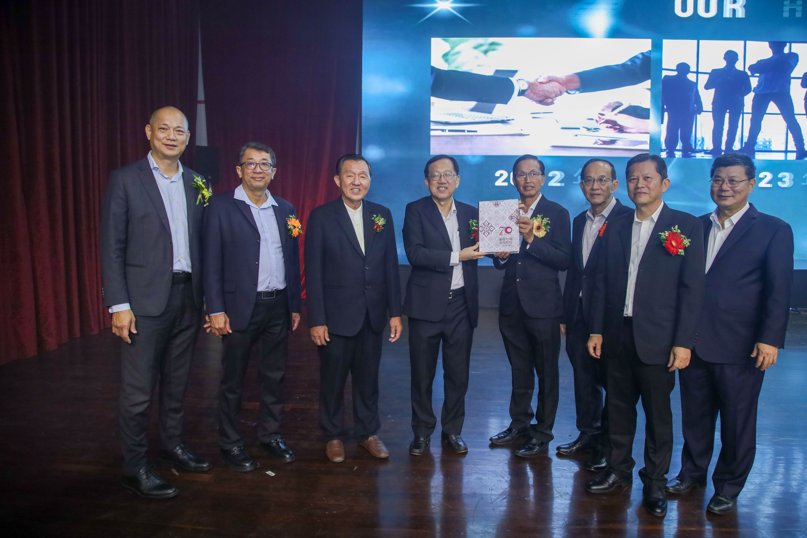

陈友信（左二）代表董总赠送书法家李业祥的墨宝“尊师重道，教育先行”给黄家和，左一为黄思汉，右一为李添霖。
董总欢庆七十周年 承前启后拓展新局
董总于2024年8月3日假加影育华国民型中学举行70周年会庆晚宴，共获近千宾客共襄盛举。当天宴开八十五席，广邀全国各地社团领袖、友族非政府组织、中央政府与雪州政府代表出席。除了播放纪念短片，推介70周年特刊和云资讯系统外，还有精彩文艺表演。
董总主席陈友信致词时表示，当前马来西亚多元国情面对的迫切挑战，就是单元与多元的争论。眼见极端右翼势力经常左右政治风向，种族宗教课题无日无之，越发保守的趋势令人担忧。我国虽然在29个月前迎来第三次中央政权转移，但威权体制遗留下的旧问题依然存在，民主转型受挫，族群政治的阴霾仍旧挥之不去，社会矛盾与分歧亟待解决。因此，“国家要实现进步，就必须避免向下沉沦，停止操弄民粹，要尊重差异，互相包容与谅解，才能塑造新的政治文化。”董总近年来不断强调守护多元、共存共荣的重要性，促进跨族群的互动交流，就是希望从校园做起，共同维护多语情境下的母语教育的永续发展。
时代巨轮不断向前，各种挑战与议题层出不穷。他认为，我国亟需革新反思突破格局，方能应变发展。“七十年来的华教事业，除了纪念与回顾，华人文化、华文教育从哪里来，要往何处去？要为华文教育留下什么资产？我们有必要深刻思考这些时代课题，前瞻远眺，才能清楚我们的历史使命，厘清华教运动的前路。”
谈到本届董总团队的主题大方向，陈友信表示将定调为“拓展”，希望在前人的成果上继续提升，同时开拓华教新领域、新路向。面对科技变迁与社会转型，加上国内外情势的改变，华教运动需在坚守华教母语教育所取得的成果基础上，与时俱进并致力论述创新，凝聚新兴思维；尤其在教育领域的革新与创造，需要壮大领航，专业扎根，立足本土，与世界接轨，回应未来新形势下的发展。
副教育部长黄家和为晚宴主宾。他致词时强调，多元并非国民团结的绊脚石，团结政府捍卫多元的立场不容质疑。他肯定董总过去七十年来为捍卫母语教育不遗余力，也肯定董总积极推动跨族群活动。教育部长法丽娜不止一次公开重申政府捍卫多源流教育的立场，而董总目前主张“对话沟通，和谐共存，消除偏见“，正是我国迫切需要努力的方向。
他说，截至目前，全国886所政府资助华小，已获得1亿750万令吉拨款。这是有史以来获得的最高拨款额，包括政府提供给的长年拨款，以及额外提供给每所学校的7万令吉厕所维修拨款。教育部过去每年9月至10月才发放，惟今年6月起已通过教育局，发放拨款给有需要的学校。
黄家和也代表行动党秘书长陆兆福，宣布捐赠10万令吉支持董总华教综合大厦。雪州行政议员黄思汉也当场响应，捐赠1万令吉，为建设华教综合大楼填砖加瓦。
董总署理主席暨会庆筹委会主席李添霖感谢各界拨冗出席，长期支持对华教发展。诚如今年会庆主题“峥嵘七秩，风泽百代”，“各位是董总在华教路上的重要伙伴，我们坚守维护母语教育的立场与信念，与全国华教同道并肩奋斗，一同捍卫我国华教，让母语文化教育继续传承百代。”
晚宴节目形式多样、精彩纷呈，二十四节令鼓、戏剧小品、华乐演奏、魔术变脸、合唱、口琴演奏、独唱、韵律操陆续登场，以极富感染力的表演给现场观众带来了视觉享受，引得现场欢呼声、喝彩声此起彼落，最后在南拳、长拳、刀棍等中华武术中圆满落幕。
 推介70周年特刊和云资讯系统。左起：庄俊隆、吴小铭、卢成良、陈友信、李添霖、杨才国、区锦华、黄再兴。